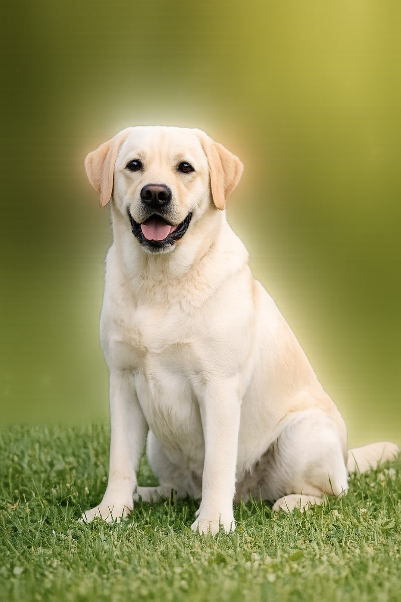

Checklist libretto sanitario cane
- Anagrafica e microchip
- Certificati e documenti vaccini
- Visite veterinarie e note
- Referti esami (sangue, urine, immagini diagnostiche)
- Terapie e ricette
- Allergie e intolleranze (se presenti)
L’obiettivo è avere un archivio ordinato: per decisioni sanitarie fai sempre riferimento al veterinario.